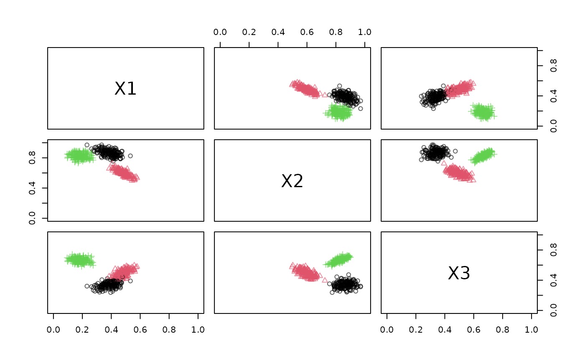
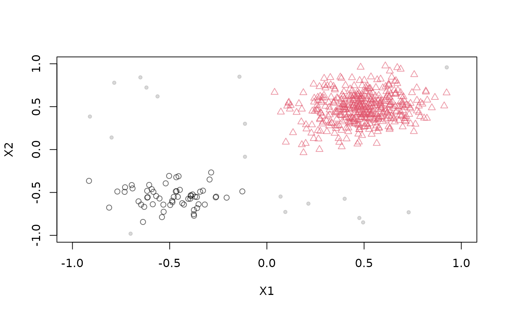
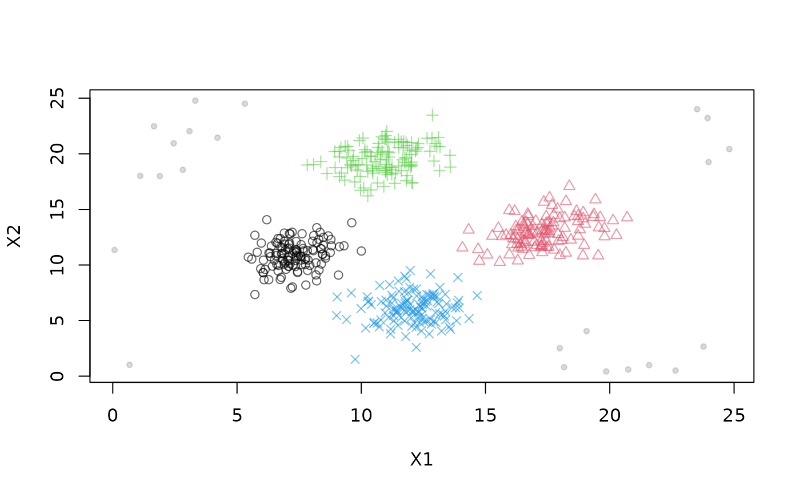

A data stream generator that produces a data stream with a mixture of static Gaussians.
Arguments
- k
Determines the number of clusters.
- d
Determines the number of dimensions.
- p
A vector of probabilities that determines the likelihood of generating a data point from a particular cluster.
- mu
A matrix of means for each dimension of each cluster.
- sigma
A list of length
kof covariance matrices.- variance_limit
Lower and upper limit for the randomly generated variance when creating cluster covariance matrices.
- separation
Minimum separation distance between clusters (measured in standard deviations according to
separation_type).- space_limit
Defines the space bounds. All constructs are generated inside these bounds. For clusters this means that their centroids must be within these space bounds.
- noise
Noise probability between 0 and 1. Noise is uniformly distributed within noise range (see below).
- noise_limit
A matrix with d rows and 2 columns. The first column contains the minimum values and the second column contains the maximum values for noise.
- noise_separation
Minimum separation distance between cluster centers and noise points (measured in standard deviations according to
separation_type).0means separation is ignored.- separation_type
The type of the separation distance calculation. It can be either Euclidean distance or Mahalanobis distance.
- verbose
Report cluster and outlier generation process.
Details
DSD_Gaussians creates a mixture of k static clusters in a d-dimensional
space. The cluster
centers mu and the covariance matrices sigma can be supplied
or will be randomly generated. The probability vector p defines for
each cluster the probability that the next data point will be chosen from it
(defaults to equal probability). Separation between generated clusters (and outliers; see below)
can be imposed by using
Euclidean or Mahalanobis distance, which is controlled by the
separation_type parameter. Separation value then is supplied in the
separation parameter.
The generation method is similar to the one
suggested by Jain and Dubes (1988).
Noise points which are uniformly chosen from noise_limit can be added.
Outlier points can be added. Their spatial positions
predefined_outlier_space_positions and the outlier stream positions
predefined_outlier_stream_positions can be supplied or will be
randomly generated. The cluster and outlier separation distance is determined by
the outlier_virtual_variance parameter. This parameter defines an empty
space around outliers, which separates them from their surroundings. Unlike
noise, outliers are data points of interest to end users, and the goal of outlier detectors is to
find them in data streams. For more details, read the "Introduction to
stream" vignette.
References
Jain and Dubes (1988) Algorithms for clustering data, Prentice-Hall, Inc., Upper Saddle River, NJ, USA.
See also
Other DSD:
DSD(),
DSD_BarsAndGaussians(),
DSD_Benchmark(),
DSD_Cubes(),
DSD_MG(),
DSD_Memory(),
DSD_Mixture(),
DSD_NULL(),
DSD_ReadDB(),
DSD_ReadStream(),
DSD_Target(),
DSD_UniformNoise(),
DSD_mlbenchData(),
DSD_mlbenchGenerator(),
DSF(),
animate_data(),
close_stream(),
get_points(),
plot.DSD(),
reset_stream()
Examples
# Example 1: create data stream with three clusters in 3-dimensional data space
# with 5 times sqrt(variance_limit) separation.
set.seed(1)
stream1 <- DSD_Gaussians(k = 3, d = 3)
stream1
#> Gaussian Mixture (d = 3, k = 3)
#> Class: DSD_Gaussians, DSD_R, DSD
get_points(stream1, n = 5)
#> X1 X2 X3 .class
#> 1 0.4096453 0.8758355 0.3428826 1
#> 2 0.4884448 0.6215276 0.5036439 2
#> 3 0.3556403 0.8411743 0.2867506 1
#> 4 0.1645162 0.8323484 0.6678395 3
#> 5 0.3713435 0.9204315 0.3264450 1
plot(stream1, xlim = c(0, 1), ylim = c(0, 1))

# Example 2: create data stream with specified cluster positions,
# 5% noise in a given bounding box and
# with different densities (1 to 9 between the two clusters)
stream2 <- DSD_Gaussians(k = 2, d = 2,
mu = rbind(c(-.5, -.5), c(.5, .5)),
p = c(.1, .9),
variance_limit = c(0.02, 0.04),
noise = 0.05,
noise_limit = rbind(c(-1, 1), c(-1, 1)))
get_points(stream2, n = 5)
#> X1 X2 .class
#> 1 0.45412223 1.0004947 2
#> 2 0.26823189 0.3524550 2
#> 3 0.06938598 0.3944330 2
#> 4 0.40527773 0.1772323 2
#> 5 0.68394853 0.5253248 2
plot(stream2, xlim = c(-1, 1), ylim = c(-1, 1))

# Example 3: create 4 clusters and noise separated by a Mahalanobis
# distance. Distance to noise is increased to 6 standard deviations to make them
# easier detectable outliers.
stream3 <- DSD_Gaussians(k = 4, d = 2,
separation_type = "Mahalanobis",
space_limit = c(5, 20),
variance_limit = c(1, 2),
noise = 0.05,
noise_limit = c(0, 25),
noise_separation = 6
)
plot(stream3)
